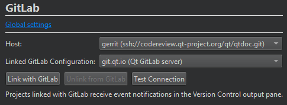

Link projects with GitLab
Link a project with a GitLab token to receive notifications on events, such as merge requests, issues, or comments, in the Version Control pane. The information is fetched every 15 minutes. Only events that occurred after the last time you logged into GitLab are displayed when you open the project for the first time. Subsequently, events that occurred after the last successful fetch are listed.
To link with GitLab:
- Go to Projects > Project Settings > GitLab to view the GitLab settings for the currently active project.

- In Host, select the URL of the GitLab server.
- In Linked GitLab configuration, select the GitLab server settings to use.
- Select Link with GitLab to receive event notifications in the Version Control pane.
To test the connection to the host using the access token specified in the GitLab configuration, select Test Connection.
To stop the reception of event notifications, select Unlink from GitLab.
See also Enable and disable plugins, Set up version control systems, Use common VCS functions, Configuring Projects, Version Control Systems, Git, and GitLab.